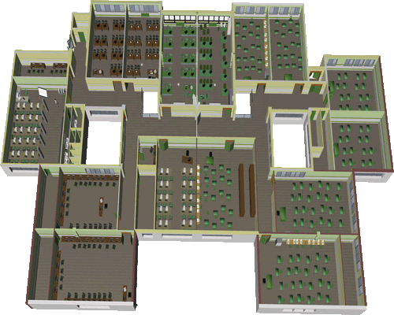

Inicio
Primera Planta
Segunda Planta
»
Inicio
» Segunda planta
» Haz Click sobre la zona deseada para visitarla de manera virtual.

Aula - AF
FP. Superior - Administracion y Finanzas @ I.E.S Galileo
Aula INF2 - DAI
FP. Superior - Desarrollo Aplicaciones Informáticas @ I.E.S Galileo
Aula INF3 - ASIR
FP. Superior - Administración de Sistemas
Informáticos en Red @ I.E.S Galileo
Aula INF5 - SMR
FP. Superior - Sistemas MicroInformáticos y Redes @ I.E.S Galileo